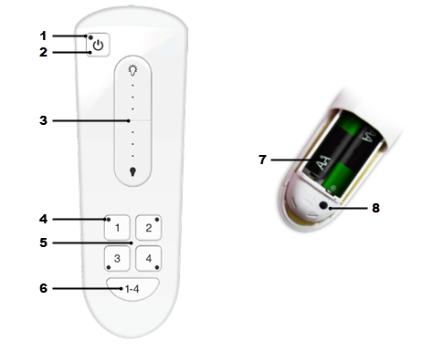

Remote Control Components
The remote control has components that allow you to program and operate the light bulbs on your lighting network.

| # | Component | Description |
|---|---|---|
| 1 | Power button indicator | Indicator that lights or flashes during different activities with the remote
control. Indicators include:
|
| 2 | Power button | Button that you press to turn on or off the lights in the selected lighting
group(s). Lights turn on to the previous dimming level. Note: To turn on/off all network
lights, regardless of lighting group, press and hold the power button for 3 seconds
without first pressing the lighting group number button. |
| 3 | Dimmer control | Control that you press and hold to dim or brighten the lights in the selected lighting group(s). You do not have to press the power button first. |
| 4 | Lighting group number indicator | Indicator that lights or flashes during different activities with the
corresponding lighting group. Indicators include:
|
| 5 | Group number button | Buttons that you press to select a corresponding lighting group to operate. Also
use these buttons to program lights into the lighting group. CAUTION: Do not
press and hold for longer than 4 seconds unless you are programming a lighting
group. |
| 6 | Battery compartment | Compartment on the back that holds 2 AA batteries to power the remote control. When batteries run low, the indicator light on the power button periodically flashes amber. |
| 7 | Reset button | Button that you press to manage the remote control as follows:
Warning: If you reset the remote control, you must reprogram all lighting
groups on it. |